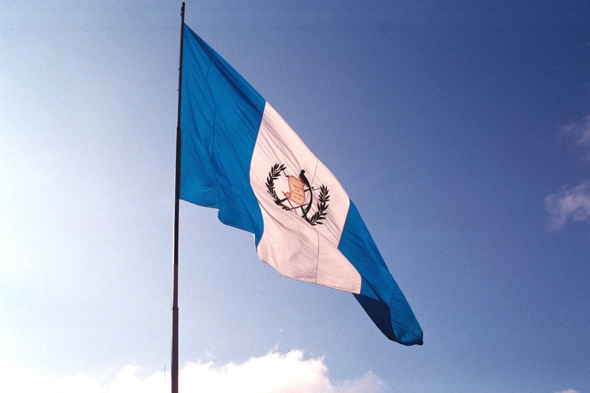
Situada en el extremo noroccidental de Centroamérica, la República
de Guatemala cuenta con una población aproximada de 15,700,000
habitantes, y una amplia cultura autóctona producto de la herencia
ya y la influencia española durante la época colonial. Su capital
es la Ciudad de Guatemala, llamada oficialmente “Nueva Guatemala de
la Asunción”. A pesar de su relativamente pequeña extensión
territorial, Guatemala cuenta con una gran variedad climática,
producto de su relieve montañoso, llegando a alcanzar una altura
de hasta 4,220 metros sobre el nivel del mar. El idioma oficial es
el español, aunque es utilizado como segundo idioma por algunos
grupos étnicos en otras partes del país. Existen también veintiún
lenguas mayas, además de las lenguas xinca, y garífuna, esta última
hablada por la población afrodescendiente en el departamento
caribeño de Izabal. La actual cultura guatemalteca es el resultado
de las numerosas influencias maya, española, afrocaribeña,
mexicana y en menor medida estadounidense, así como también del
resto de América. La influencia de los indígenas y de los colonos
españoles aún puede ser vista por toda Guatemala. Los tejidos
«típicos» y algunas vestimentas tradicionales se elaboran de forma
tradicional maya, sin embargo, la transculturización ha tenido su
influencia en las prendas de vestir, principalmente en la
población indígena joven. También pueden encontrarse importantes
sitios arqueológicos con ruinas mayas.
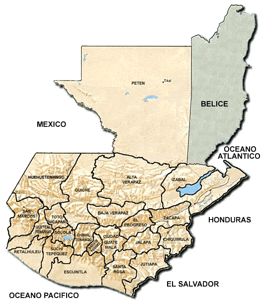
Guatemala posee 108,889 km²
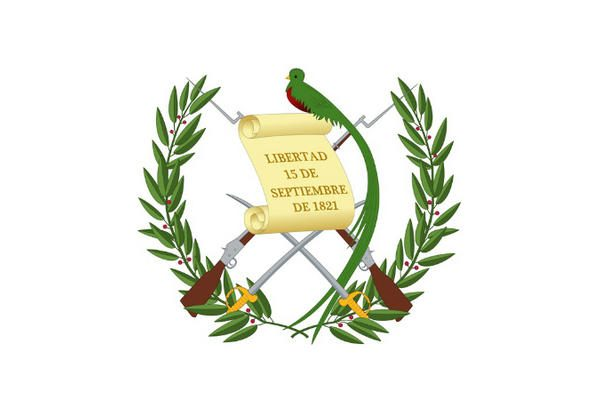
Escudo Nacional
Las ramas de laurel representan victoria. El pergamino es la inmortalidad de la fecha de nacimiento de la patria y el quetzal es símbolo supremo de libertad (Congreso de la República de Guatemala, s.f.). Interpretación azteca o precortesiana; el encino, simboliza la fuerza y el laurel simboliza la victoria.
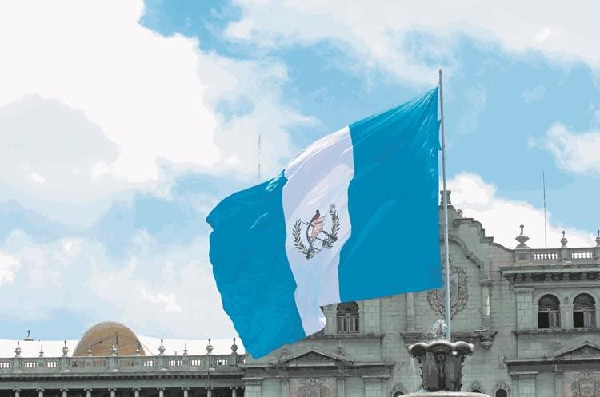
Bandera Nacional
La bandera de Guatemala es el emblema e insignia suprema de la República de Guatemala y ha sufrido transformaciones desde incluso antes de la la creación de la república el 21 de marzo de 1847.
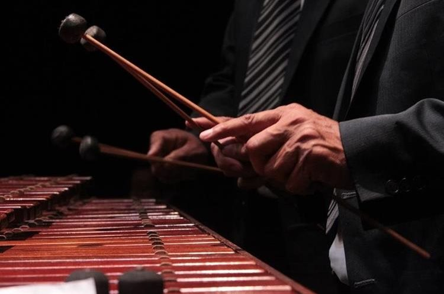
Instrumento Autóctono Nacional
En Guatemala la Marimba es un instrumento al que se le da el nombre de autóctono, este se utiliza en la ciudad y en las áreas rurales del país, es parte de los días cívicos de Guatemala.
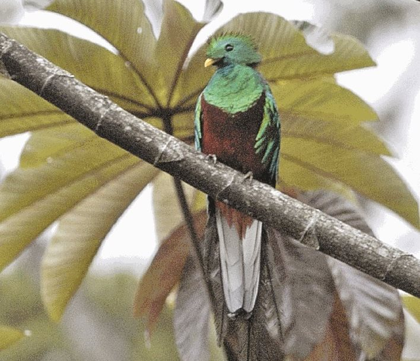
Ave Nacional
El 5 de septiembre se conmemora el Día Nacional del Quetzal, símbolo patrio según lo establecido en el Decreto No. 33 del 18 de noviembre de 1871, donde fue declarado como Ave Nacional de Guatemala. El quetzal es reconocido por su largo plumaje.
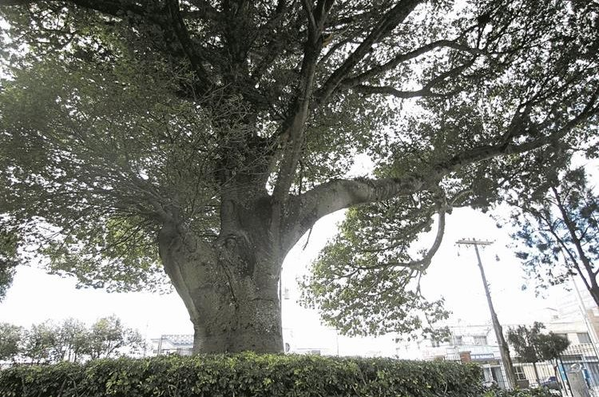
Árbol Nacional
La Ceiba, el árbol nacional de Guatemala, es orgullo de raíces mayas. La Ceiba Pentandra, es el árbol Nacional de Guatemala. Simboliza el orgullo de nuestras soberanas raíces Mayas, el 8 de marzo de 1955 el coronel Carlos Castillo Armas firmo un Acuerdo gubernativo.

Flor Nacional
La Monja Blanca en Guatemala es la Flor Nacional y su día se celebra cada 11 de febrero.

Castillo de San Felipe
El castillo de San Felipe de Lara es una fortaleza ubicada en el municipio de Livingston en la embocadura del río Dulce con el Lago de Izabal en el oriente de Guatemala.
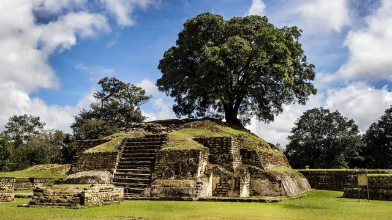
Iximche
Iximché es un sitio arqueológico precolombino en el altiplano occidental de Guatemala.
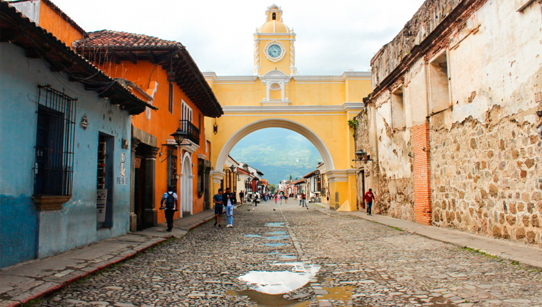
La Antigua Guatemala
Antigua es una pequeña ciudad rodeada por volcanes en el sur de Guatemala. Es famosa por sus edificios coloniales españoles, muchos de ellos restaurados después del terremoto de 1773 que terminó con el régimen de 200 años de Antigua como la capital colonial de Guatemala.
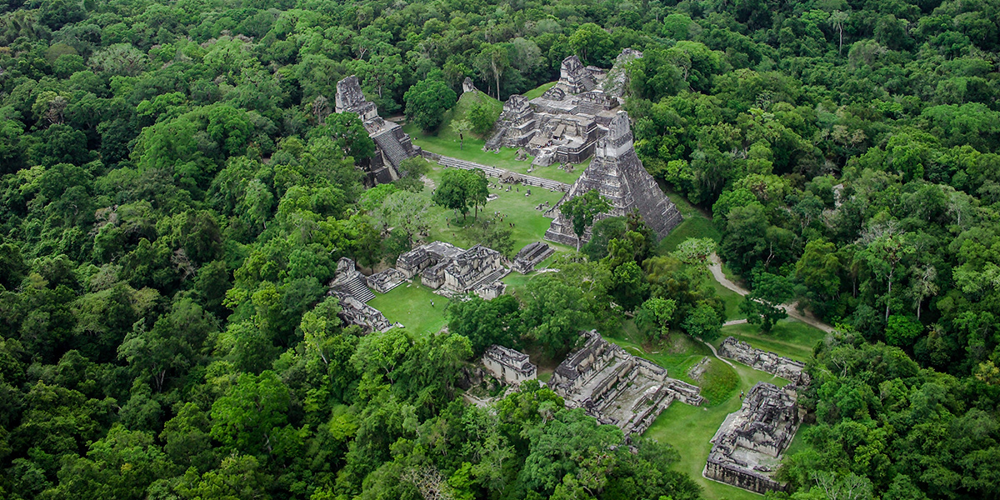
Parque Nacional Tikal
El Parque nacional Tikal está situado en el departamento de Petén, en el norte de Guatemala y fue creado bajo decreto gubernativo el 26 de mayo de 1955.
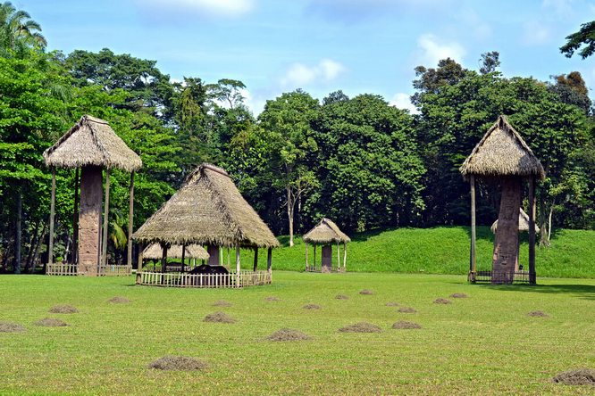
Parque Arqueológico Quiriguá
Quiriguá es un yacimiento arqueológico perteneciente a la antigua civilización maya, ubicado en el departamento de Izabal en el nor-oriente de Guatemala.
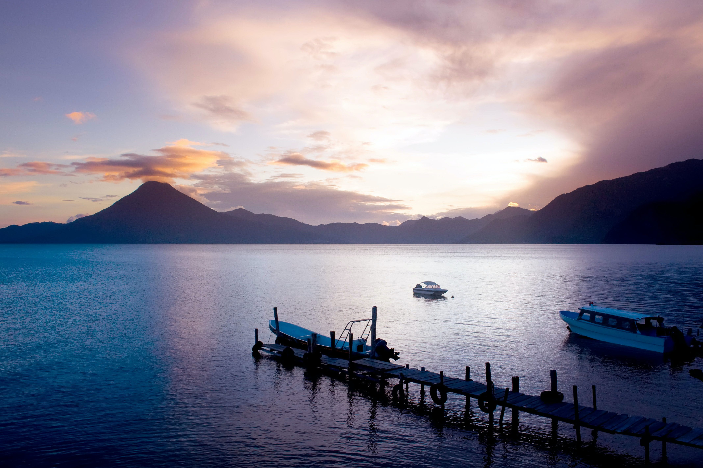
Panajachel
Panajachel es una ciudad del altiplano guatemalteco, al oeste de la ciudad de Guatemala. Se encuentra en la costa norte del lago Atitlán.